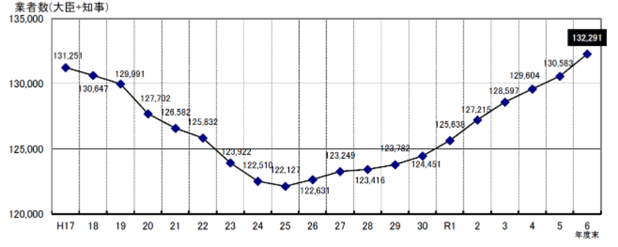
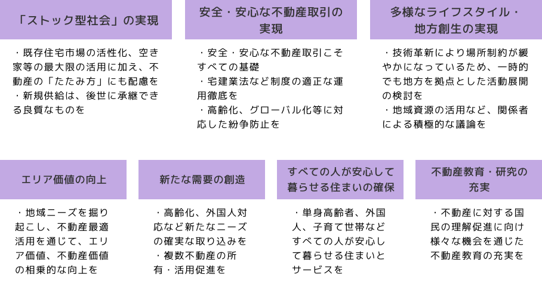
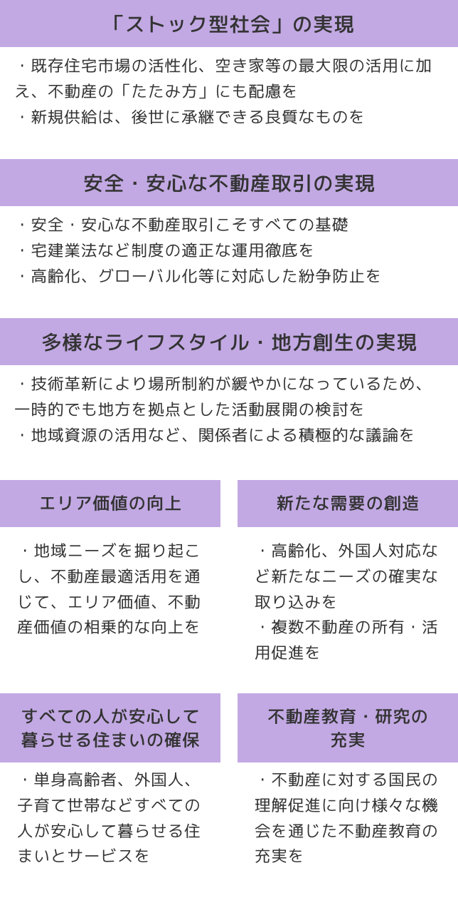

Vol.10
不動産業（宅地建物取引業）の創業ポイント
1.業種の概要
（１）業種の概要
不動産業（宅地建物取引業）とは、土地や建物の売買、交換、賃貸の仲介や代理を業として行う事業のことをいいます。たとえば「土地を売りたい人」と「買いたい人」をつなぐ仲介をしたり、アパートの入居者を募集して契約を仲介したりする場合が該当します。
宅地建物取引業法では、以下の行為を業として行うものと規定されています。
- 宅地・建物の売買、交換
- 宅地・建物の売買、交換又は貸借の代理
- 宅地・建物の売買、交換又は貸借の媒介
「業として行うもの」とは、営利を目的として不特定多数の者に対して継続的又は反復的に行うもので、社会通念上、事業の遂行と見られる程度のものをいいます。
（２）市場動向
【不動産業の企業数】
国土交通省が発表している資料によると、宅地建物取引業者数は、令和6年度時点で11年連続で増加しています。
令和６年度末（令和７年３月末）現在の宅地建物取引業者数は、132,291業者（国土交通大臣免許が3,158業者、都道府県知事免許が129,133業者）です。
対前年度比では、大臣免許が111 業者（3.6％）、知事免許が1,597業者（1.3％）増加し（全体では1,708業者（1.3％）の増加）、11 年連続の増加となっています（図表―１参照）。
図表―１ 宅地建物取引業者数の推移（過去20年間）

資料：国土交通省プレスリリース『令和6年度宅地建物取引業法の施行情報調査結果について』
【不動産業の経営環境】
① マクロ経済の影響を受けやすい
不動産業はマクロ経済の動きにとても影響を受けやすい業種です。金利の上昇や景気の変化、住宅ローンに関わる政策、さらには人々の価値観の変化が、取引の数や価格を左右します。
景気が良い時期には投資意欲が高まり、不動産の流通も活発になりますが、景気が悪くなると取引は減り、仲介や販売を中心とする事業者の収益は厳しくなります。このように、マクロ経済の動向と強く結びついています。
② 需要の変化
最近では、少子高齢化や人口減少の進行により、住宅需要の中心は「新築」から「中古、再生」へと移りつつあります。空き家の増加や建物の老朽化が進むなか、不動産会社には仲介や販売だけでなく、リフォーム、リノベーション、管理といった再生ビジネスも求められています。
また、人々の暮らし方や働き方も多様になり、不動産の「所有から利用へ」という流れが進んでいます。賃貸住宅、シェアオフィス、短期利用型の住まいなど、柔軟に利用形態を選べる仕組みが広がっています。
③ ミクロ環境の影響
不動産業はミクロ環境の影響も大きい業種です。
地域の経済状況や人口動態、地価の変化、競合他社の戦略、地元の金融機関や建設会社との関係性など、身近な要素が業績を左右します。
たとえば、地方では人口減少で取引が減る傾向がありますが、再開発が進む都市部では新たな需要が生まれることもあります。
また、地域の工務店やリフォーム業者、管理会社などとの協力体制を築くことで、顧客満足度を高め、紹介やリピートにつなげることも可能です。創業の際には、こうした地域とのつながりづくりが非常に有効になります。
- 国交省『不動産ビジョン』
国土交通省は、2019年に「不動産業に携わるすべてのプレーヤーが不動産業の持続的な発展を確保するための官民共通の指針」として『不動産業ビジョン2030』という資料を発表しています。
この資料には、今後の不動産業の経営において考慮すべき内容が盛り込まれています（図表―２参照）。創業においては、この内容も考慮してビジネスプランを構築しましょう。
図表ー２ 不動産業ビジョン2030
～令和時代の『不動産最適活用』に向けて～（概要）を基に著者作成
【本ビジョン全体を通じた基本コンセプト】
■ 人口減少・少子高齢化など社会経済情勢が急速に変化する状況下においては、次の2点が重要
① 時代の要請や地域のニーズを踏まえた不動産を形成し、
② それら不動産の活用を通じて、個人・企業・社会にとっての価値創造の最大化（＝『不動産最適活用』）を図ること
■ これからの不動産業は、『不動産最適活用』の実現をサポートしていくことが必要
【不動産業の将来像】
不動産業が目指すべき将来像として次の3点を設定
① 豊かな住生活を支える産業：快適な居住環境の創造、円滑な住替え等
② 我が国の持続的成長を支える産業：オフィス、物流施設、ホテル等の供給等
③ 人々の交流の「場」を支える産業：憩いの「場」、イノベーションの「場」等
【官民共通の目標】
上記将来像を実現する上での官民共通の目標として、次の7点を設定


２．必要な許認可等
不動産業を営業するには、宅地建物取引業の免許を取得することが要件となっています。
不動産業を営業する事務所を、一つの都道府県に設置する場合は都道府県知事の免許、二つ以上の都道府県に設置する場合は国土交通大臣の免許が必要です。免許の有効期間は５年です。
【免許の要件等】
宅地建物取引業の免許を受け営業を行うには、①事務所ごとに責任者を置くこと、②専任の宅地建物取引士を配置すること、③営業保証金の供託または保証協会への加入などの要件を満たす必要があります。
① 事務所ごとに責任者を置くこと
不動産業を営業する事務所には、宅地建物取引業に係る契約を締結する権限を有する使用人を置くことが必要です。つまり、それぞれ契約の内容をしっかり判断して契約できる人（権限を持つ使用人）を配置しなければなりません。誰でも契約してよいわけではなく、責任をもって取引を進められる人材がいることが条件です。
② 専任の宅地建物取引士を配置すること
宅地建物取引業者は、事務所や宅建業法第50条第2項に規定する案内所等には一定の数の専任の宅地建物取引士を置かなければなりません。法律に規定する専任の宅地建物取引士の人数は、事務所の場合は業務に従事する者5人に1人以上、案内所等（宅建業法第50条第2項関係）の場合は1人以上と定められています。
この規定に抵触する事務所を開設してはならず、免許後に既存の事務所等が規定に抵触するに至ったときは、2週間以内に新たに人員を補充するなど必要な措置を執らなければなりません。
宅地建物取引士は、契約時の重要事項説明書への記名押印や、顧客への説明などを行う立場にあり、法令遵守と信頼確保の要となります。
【専任性認定の要件】
「専任の宅地建物取引士」における専任とは、①その事務所に常勤すること（常勤性）と②宅地建物取引業に専ら従事する状態にあること（専従性）の2つの要件を満たしている必要があります。
① 常勤性
常勤するとは、宅地建物取引士が当該事務所等に常時勤務すること、もしくは常時勤務することができる状態にあることをいいます。
常時勤務とは、宅地建物取引士と宅建業者との間に雇用契約等の継続的な関係があり、当該事務所等の業務時間に当該事務所等の業務に従事する、あるいは従事することができる勤務形態であることが必要となります。
専任の宅地建物取引士となる者が、通常の通勤が不可能と認められる場所に住んでいる場合等には専任の宅地建物取引士に就任することはできません。
② 専従性
宅地建物取引士が専ら当該事務所等の宅地建物取引業務に従事する、もしくは従事することができる状態であることが必要となります。
宅地建物取引士が宅地建物取引業務のみならず、他の業務も併せて従事する場合、当該宅地建物取引士が専ら宅地建物取引業務に従事することができる状態かどうか実質的に判断することとなります。
③ 営業保証金の供託または保証協会への加入
不動産取引では、万一のトラブルに備えて「営業保証金」を供託するか、「宅地建物取引業保証協会」に加入する必要があります。
～営業保証金を供託する場合～
主たる事務所（本店）：1,000万円
従たる事務所（支店など）：1か所につき500万円
を、法務局（供託所）に預けます。
～保証協会に加入する場合（多くの創業者はこちらを選択します）〜
営業保証金を供託する代わりに、
主たる事務所：60万円
従たる事務所：30万円
を「弁済業務保証金分担金」として宅地建物取引業保証協会に納めます。
保証協会に加入すると、トラブル時の弁済制度や業務支援が受けられるため、中小規模の創業者には現実的な選択です。
宅地建物取引業の免許を取得する際は、上記の要件に加えて、事務所の設置基準や欠格事由など、他にも詳細な条件が定められています。
都道府県などの許可権者によって取扱いが異なる場合もありますので、事前に申請先へ確認し、必要書類や手続の流れを十分に把握しておきましょう。
３．商品・サービスとセールスポイント
不動産業の主な商品・サービスは、「売買仲介」「賃貸仲介」「管理」「開発・分譲」「コンサルティング」などに大別されます。創業時には、地域の需要や自身の経験に応じて、どの領域に重点を置くかを明確にすることが重要です。（図表―３参照）
| 区分 | 主な内容 | 創業時のポイント |
|---|---|---|
| 売買仲介 | 土地、住宅、マンションなどの売買を仲介し、手数料を得る。 |
高単価案件が多く、取引成約までの期間が長い。 資金繰りに注意。 |
| 賃貸仲介 | アパート、マンション、店舗などの賃貸契約を仲介 |
成約件数を重ねることで安定収益を確保しやすい。 地場密着型に向く。 |
| 管理業務 | 入居者対応、家賃回収、修繕手配などを代行 | 長期契約が多く、ストック型収入を得やすい。 |
| 開発・分譲 | 土地を仕入れ、造成・建築・販売を一貫して行う。 |
高リスク・高リターン型。 創業初期は慎重に検討。 |
| 不動産コンサルティング | 資産運用、相続、再生などの助言業務 | 専門知識を生かし、複数の視点（税務・法務・金融）から最適な不動産活用を提案する力が求められる。 |
４．事業モデルとターゲット選定
不動産業は「誰に」「どのような価値を」「どんな方法で提供するか」を明確に設計することが成功の第一歩です。
不動産業を軌道に乗せるには、単に物件を扱うだけでなく、どの層にどのような課題解決を提供するかを明確にすることが重要です。
不動産業は、顧客層によって求められる専門性、スピード、提案内容が異なるため、自社の得意領域を明確にすることで、信頼獲得と収益安定の両立が可能になります。
【事業モデルの例】
不動産業の事業モデルは、以下のようなものが考えられます。
（１）住宅購入支援型
ターゲット：初めてマイホームを購入する層、若年ファミリー層
- 住宅ローンの選定、申込サポート
- 購入計画、ライフプランに基づく資金シミュレーション
- 補助金、税制優遇の活用支援
- 建築、リフォーム会社との連携によるワンストップ提案
ポイント：住宅購入の安心感を軸に、金融知識と生活設計の両面で支援できる体制を整えることが鍵です。
（２）賃貸住宅仲介型
ターゲット：賃貸住宅、店舗、事務所を探す個人、法人の入居希望者
- アパート、マンション、戸建て、店舗などの賃貸仲介
- SUUMO、アットホームなどのポータルサイト掲載による集客
- SNS、Google広告などを活用したインターネット広告営業
- 契約、更新、入居サポートまでの一貫対応
- 地元企業、大学、医療機関などとの法人提携による安定集客
ポイント：賃貸仲介は単価が低く件数が多いため、Web集客の仕組み化と回転率の最大化が収益を左右します。地域特化型で「このエリアならこの会社」と認知されるブランド形成も有効です。
（３）事業用不動産特化型
ターゲット：中小企業経営者、店舗運営者、スタートアップ企業
- 事業拡張、移転、出店計画に基づく物件提案
- テナント条件交渉、賃料査定、更新契約支援
- CRE戦略（企業不動産戦略）や資金調達との連動提案
- 売買、賃貸、サブリースを組み合わせた収益改善支援
ポイント：単なる仲介ではなく、経営資源としての不動産最適化を支援するパートナーとして信頼を構築します。
（４）収益物件提案型
ターゲット：不動産投資を検討する個人投資家、資産運用を行う法人、事業会社
- 区分マンション、一棟アパート、商業ビル、倉庫などの投資物件提案
- 利回り計算、キャッシュフロー分析、融資アレンジの支援
- 保有資産の入れ替え（売却、買換え）やポートフォリオ最適化
- 税務、法人設立、信託スキームなどを組み合わせた投資設計
- 管理、リーシング、出口戦略までの長期運用サポート
ポイント：収益物件提案は「販売＋コンサルティング」の複合型事業です。物件選定だけでなく、資金調達、保有、売却の全段階を支援することで、顧客との長期的関係を築けます。また、法人や医療法人などの資産分散需要を取り込みやすく、安定的な高単価取引が見込めます。
（５）地域再生、空き家活用型
ターゲット：自治体、地元企業、地域団体、NPO等
- 空き家、空き地の再生、活用プロジェクトの企画、運営
- エリアマネジメント、リノベーションまちづくりの推進
- 公的不動産（官有地、遊休施設）の利活用提案
- 移住促進、関係人口増加を目的としたまちづくり支援
ポイント：地域課題を解決しながら、街の価値を高める不動産事業として、行政や地域団体との協働が有効です。
（６）資産承継、相続対応型
ターゲット：高齢者層、資産家層、不動産を複数所有する個人、法人
- 相続税、譲渡税のシミュレーション
- 遊休資産、共有持分の整理、節税スキーム提案
- 売却、賃貸、等価交換、信託など最適な承継方法の立案
- 弁護士、税理士、司法書士との連携によるワンストップ対応
ポイント：法務、税務、評価の知見を組み合わせ、「相続対策と資産再構築」を同時に支援する専門型不動産業が増加しています。
（７）問題のある物件解決型
ターゲット：権利関係や法的課題を抱える物件の所有者、相続人、投資家
- 相続登記未了物件の登記、名義変更の調整、相続人間協議のサポート
- 借地権、底地問題、地主・借地人双方への調整、借地権付売買の組成
- 筆界未定や境界トラブルなどがある物件について、測量士、司法書士との連携による確定支援
- 共有持分、競売、任意売却案件持分の買取、債権者調整、再販スキーム構築
- 事故物件、老朽危険建物リスク開示、リフォーム、転用提案
ポイント：法務、測量、金融の知識を統合し、問題を抱えた不動産を再び社会に生かす実務解決型事業です。こうした案件対応は、非常に難易度が高いため独自の強みとなり、士業、金融機関、自治体ばかりではなく、同業者からの紹介にもつながります。
【事業モデルのまとめ】
これらの事業モデルは、不動産業を「仲介」から「価値創造、課題解決、運用支援」へと進化させる方向性を示しています。
創業時は、地域性、専門性、顧客層に合わせて、「賃貸＋住宅購入」型や「収益物件＋相続」型のように２軸で組み合わせると、事業の安定性が高まります。
５．マーケティング・集客の手法
創業段階において最も重要なのは、ターゲット層や地域からの信頼を得ることと、継続的に見込み客を増やす仕組みを作ることです。そのためには、オンラインとオフラインの両輪で戦略的にマーケティングを展開しましょう。
（１）オンライン戦略
① 自社ホームページ、ポータル連携
物件情報を単に掲載するだけでなく、地域情報や融資・税制の豆知識などを発信し、専門性をアピールします。
② SNS（Instagram、LINE、YouTube等）活用
成功事例や施工事例、顧客インタビューなどを通して、人柄や実績を可視化します。
③ Googleビジネスプロフィール
口コミ、写真、投稿を継続的に更新し、地域検索（ローカルSEO）での露出を高めます。
（２）オフライン戦略
① 紹介ネットワークの構築
地元の金融機関、税理士、工務店、行政などから、紹介が得られるような関係を築きます。
② 相談会・セミナー開催
「空き家活用」「相続対策」「不動産投資ノウハウ」など、ニーズあるテーマを切り口に信頼を構築します。
③ 地域密着PR
地元フリーペーパー、自治体掲示板、地域イベントでの出展などを通じ、自社のPRを行います。
（３）継続的な接点づくり
初回接触での契約に至らなくても、「無料査定レポート」「住宅ローン診断」「不動産相続チェックリスト」などの提供を通じて、再接触できることを前提にしたマーケティングを行うことが重要です。
（４）リピーター戦略
不動産業を繫栄させるには、一度の契約で終わらせないことがポイントです。契約後のフォローアップ体制が、次の紹介や再取引につながります。以下のような施策が有効です。
- 定期的な市場動向レポートや不動産ニュースレターの配信
- 売却や購入後のリフォーム提案や管理サポート
- 紹介制度（紹介者、紹介先双方にメリット）を通じた口コミ促進
- 顧客データベース（CRM）を活用したフォローアップ
また、法人顧客に対しては「資産ポートフォリオ診断」「固定資産活用提案」「CRE戦略サポート」など、継続的に相談できるパートナーとしてのポジションを確立することが理想です。
６．人材確保、教育、組織づくり
不動産業は「人が商品」といっても過言ではない業界です。創業期には、代表者自身が営業、管理、契約を兼務することが多いですが、事業を成長させるには、役割分担と教育体系をあらかじめ整えておくことが不可欠です。
（１）教育、育成の方向性
① 営業担当者の育成
物件知識だけでなく、金融、税務、建築など異分野を横断的に理解できる力を養います。加えて、強引に売るのではなく「お客様の気持ちに寄り添い、その気になっていただく」提案型のスキルが重要です。
② 契約担当者の教育
たとえば、宅地建物取引業法、民法、インボイス制度など、法務、税制の知識を定期的にアップデートし、安心と信頼の契約手続きを実現します。
③ 組織文化の醸成
組織全体が「顧客にとって最善か」を判断基準とする風土を築くことが大切です。営業、管理、契約、アフターフォローが一体となり、お客様に信頼されるチームになることが不可欠です。
④ DX、デジタル対応を前提にした組織づくり
不動産業界は、業務構造や商習慣からデジタル化、DX化が遅れているといわれています。
ただし最近では、電子契約、オンライン申請、物件情報流通のデジタル化が進みつつあり、これを機に「人の温かさ」と「デジタル効率」の両立が求められています。たとえば、宅建業法改正により2022年5月から書面の電磁的方法での交付が可能になりました。
また、物件情報管理、契約管理、顧客管理（CRM）をクラウド化するツールの導入を検討し、反響対応、顧客フォローをスピーディーに行える仕組みを構築するのもお勧めです。
デジタルに強い人材、意識づくり、ITリテラシーの向上を促し「ツールが補助するが、提案は人が行う」というハイブリッド体制を目指します。
⑤採用、定着、組織展開
採用時の視点としては、物件を売ることだけを考えるのではなく「相手の立場で考える」「信頼関係を築ける」人材を重視します。定着率向上のためには、アナログ業務が多かった業界だからこそ、残業、休日出勤の削減、デジタルツールによる業務負荷軽減を図ることで、従業員満足度を上げます。
将来的な組織展開を視野に入れると、営業、契約、管理、デジタル運用という４つの役割に分け、明確な責任と育成方法を定めます。さらに、チーム横断で顧客を支える体制を整備していきます。
（２）人材確保、教育、組織づくりのまとめ
今後の不動産業では、「相手の心に寄り添う提案型の営業」「デジタルツールを活用した効率と信頼の両立」「人材、組織、文化の整備」の三本柱が、創業、成長、安定経営を実現するための重要な要素になります。
グイグイ押す営業をするのではなく、お客様とともに「選び、創る、支える」姿勢を貫くことで、地域に根ざした信頼型不動産会社として長く選ばれ続ける基盤が築けます。
7．資金計画
不動産業の創業には、営業保証金（もしくは弁済業務保証金分担金）や事務所、広告宣伝など集客にかかる初期投資が必要になります。
事務所を賃借して開業する場合、初期資金はおおむね300万円〜800万円程度、内装やIT環境を整備する場合は1,000万円前後になることもあります。主な初期費用の内容を挙げると、以下のようなものが考えられます。
【設備資金】
① 事務所関連費
開業にあたって最も大きな支出が、事務所の確保と設備費です。
敷金、礼金、仲介手数料のほか、内装工事、机や椅子などの什器、パソコン、複合機といった備品の購入費も必要になります。
小規模なオフィスでも、これらを合わせると150万〜300万円程度が一般的な目安です。
② 免許取得・登録費用
宅地建物取引業の免許を取得する際には、登録免許税などの費用がかかります。
都道府県知事免許、国土交通大臣免許、それぞれに申請の手数料が必要です。このほか、申請書類の取得や証紙代などの諸費用も見込んでおきましょう。
③ 営業保証金または保証協会分担金
事業を開始するには、法令で定められた「営業保証金」を供託する必要があります。
金額は本店で1,000万円、支店で500万円ですが、多くの事業者は保証協会に加入し、代わりに弁済業務保証金分担金や保証協会の入会金としておおむね60万〜100万円前後を納付します。創業初期は資金負担を抑えるためにも、保証協会への加入を選ぶケースが一般的です。
⑤ 備品・システム導入費
業務の効率化と信頼性向上のため、デジタル環境の整備も有効です。
パソコン、複合機などの基本設備に加え、顧客管理システム（CRM）や電子契約ツール、クラウド型物件管理システムの導入を検討すると良いでしょう。
導入コストは30万〜100万円程度が目安ですが、クラウドサービスを活用すれば初期投資を抑えることも可能です。
【運転資金】
不動産業では、開業直後の集客活動が非常に重要です。ホームページ制作、ポータルサイト（SUUMO、アットホーム等）への掲載、名刺、看板制作、SNS広告運用など、オンライン・オフライン両面での広告費が発生します。これらの初期費用は
30万〜100万円程度が目安で、特にネット広告やSEO対策は早期の成果に直結する重要な投資です。
開業後すぐに売上が安定するとは限らないため、3〜6か月分の運転資金を確保しておくことが大切です。賃料、人件費、通信費、広告費などを合わせ、150万〜300万円程度の余裕を持った資金計画を立てましょう。
【資金計画のまとめ】
不動産業の創業では、事務所、免許、保証協会、広告、システム、運転資金の6項目を中心に計画を立てる必要があります。とくに初期段階は、売上が実現するまでの期間を考慮し、半年間程度は運営できる資金的余裕を持つことが不可欠です。
また、デジタル化が遅れがちな業界だからこそ、創業時からIT環境を整えることが、長期的な効率経営と信頼獲得につながります。
8．収支計画
（１）売上モデル
創業初期の不動産業では、安定した収益基盤を築くために、賃貸仲介や管理業務などのストック型収入を中心に据えながら、売買仲介によるスポット収益を積み上げていく構成が望ましいです。
とくに創業1年目は、固定費を抑えつつ、少人数体制で無理のない収益モデルを描くことが重要です。
たとえば、小規模事務所（2〜3名体制）の場合、次のようなモデルを想定できます。
① 売買仲介
売買仲介では、月に2件の成約を目標とします。
1件あたりの平均手数料を約75万円とすると、月間でおよそ150万円の売上となります。
②賃貸仲介
賃貸仲介では、月10件程度の成約を目指すとよいでしょう。
1件あたりの手数料を6万円とした場合、月間で約60万円の収益が見込めます。
③管理業務
さらに、管理業務を同時に進めることで、安定的なストック収入を得ることができます。たとえば管理戸数が40戸、1戸あたり月5,000円の管理料を設定すると、月20万円の定期収入が得られます。これらを合計すると、月間売上はおおむね230万円程度となります。
（２）費用構造の目安
人件費、広告費、通信費などの販管費を差し引いた場合、営業利益はおよそ80万円前後（利益率約35％）が想定されます。（図表―４参照）この水準であれば、創業初期でも十分に黒字化を目指せるモデルです。収益を安定させるポイントは、単一の収入源に依存しないことです。
- 管理物件を積み上げてストック収入を強化すること
- 売却やリフォーム提案などを通じて再生ビジネスを加えること
- 過去の顧客やオーナーからの紹介制度を整備して新規顧客を得ること
これら「管理、再生、紹介」の3軸を持つことで、季節変動や景気動向に左右されにくい安定的な経営が可能になります。
また、近年はポータルサイト依存から脱却し、自社メディアやSNSを活用して紹介、口コミ経由の成約率を高める動きも広がっています。
このような「信頼を基盤としたリピート型の営業構造」を確立することが、長期的な収益の平準化につながります。
| 科目 | 金額（万円） | 算出根拠等 |
|---|---|---|
| 売上高 | 230 |
【売買仲介】 ・成約2件（平均手数料75万円×2）＝150万円 【賃貸仲介】 ・成約10件（平均手数料6万円）＝60万円 【管理収入】 ・管理物件40戸（1戸あたり5,000円）＝20万円 【合計】230万円 |
| 販売費及び一般管理費 | 151.4 | 家賃～その他の合計 |
| 家賃 | 30 | 10～15坪程度の店舗兼事務所を想定 |
| 人件費 | 70 | 役員報酬1人・営業社員1人・アルバイト１人 |
| 広告宣伝費 | 30 | ポータルサイト掲載費・SNS広告費など |
| 支払利息 | 1.4 | 借入600万×利率2.8%÷12か月 |
| その他 | 20 | 業務委託費・水道光熱費・消耗品費・通信費など |
| 利益 | 78.6 |
【さいごに】
不動産業は、初期投資が大きい一方で、人的スキルと信頼関係が成果を左右するビジネスです。
創業を成功させるためには、次の３つの観点を意識することが大切です。
① 明確なコンセプト設計
「どのエリアで、どの層に、どんな不動産価値を提供するか」を明確に言語化し、それに基づいて営業戦略、商品設計、情報発信を一貫させることが重要です。
何でも扱うよりも、地域特化やターゲット特化のほうが信頼を得やすく、紹介につながります。
② 顧客体験の一貫性と信頼の積み重ね
不動産業は、グイグイ押す営業よりも、お客様の不安や迷いに寄り添う姿勢が成果を生みます。
問い合わせ対応、現地案内、契約、アフターフォローまで、一人ひとりの顧客体験を丁寧に設計し、安心して任せられる人としてのブランドを築きましょう。
③ 経営者としての視点と数値管理
営業力だけでなく、経営、マーケティング、資金計画を総合的に捉える経営者マインドが不可欠です。月次の収支、成約率、広告費の効果測定を常に数字で確認し、無駄のない運営を心がけましょう。とくに重要なのは、過去の勤務先や取引関係で築いた人脈を生かすことです。
独立後の初期はゼロからの集客よりも、既存の知人、資産家などのお客様、紹介者を中心に展開することで、開業初月から安定的な売上を確保できます。
不動産の取引は、単なる物件の売買ではなく、お客様の人生や事業に関わる重大な選択を支える仕事です。相手の立場に立ち、最良の判断を支える姿勢を貫くことが、長く選ばれる宅地建物取引業への第一歩となります。
掲載日 令和7年12月1日
■プロフィール
上野 光夫
中小企業診断士・大正大学招聘教授。
九州大学を卒業後、日本政策金融公庫（旧国民生活金融公庫）に26年間勤務し、主に中小企業への融資審査の業務に携わる。約3万社の中小企業と約5,000名の起業家への融資を担当した。
2011年にコンサルタントとして独立。起業支援、財務コンサルティングを行うほか、講演、執筆などの活動を行っている。
主な著書に『事業計画書は1枚にまとめなさい』（ダイヤモンド社）がある。
日本最大級の起業家支援プラットフォーム「DREAM GATE」において、アドバイザーランキング「資金調達部門」で8年連続して第1位を獲得。
会社ＨＰ：https://mmconsulting.jp/
YouTubeチャンネル：https://www.youtube.com/@mkeiei